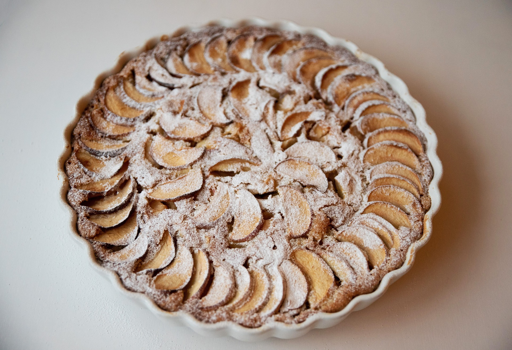

Tarte aux pommes
Ingrédients :
- 250g de pâte brisée
- 1kg de pommes
- 120g de sucre
- 20cl de crème
- 2 œufs
- 1 sachet de sucre vanillé

Recette :
Abaissez la pâte, foncez un moule beurré et fariné.
Épluchez puis coupez les pommes en quartiers.
Disposez-les en cercles sur le fond.
Battez les œufs avec les deux sucres et la crème puis versez ce flan sur la tarte.
Enfournez pendant 30 à 40 min à 180°C.